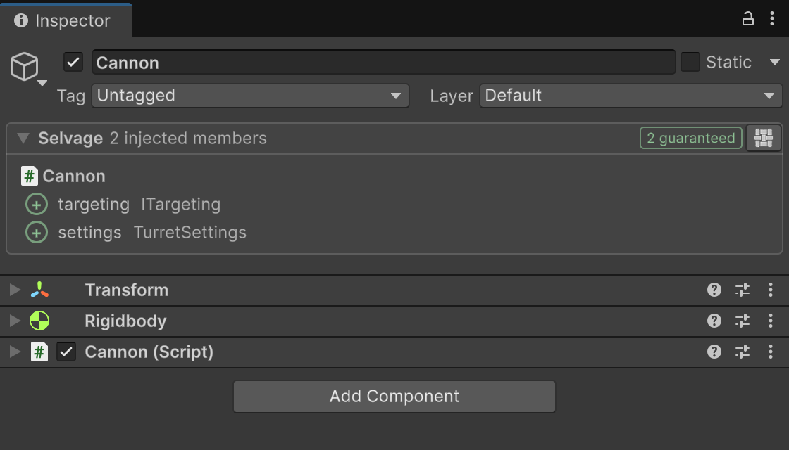
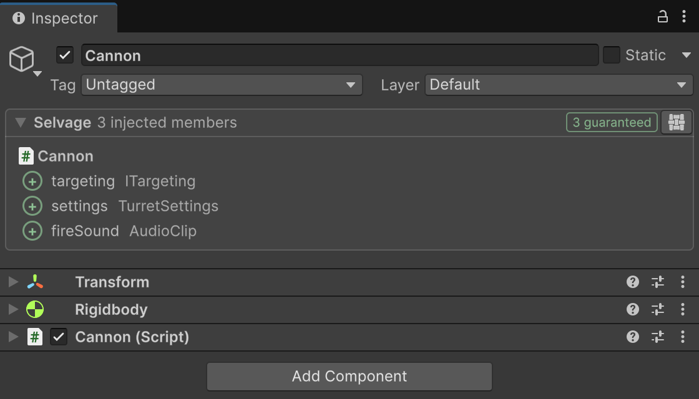
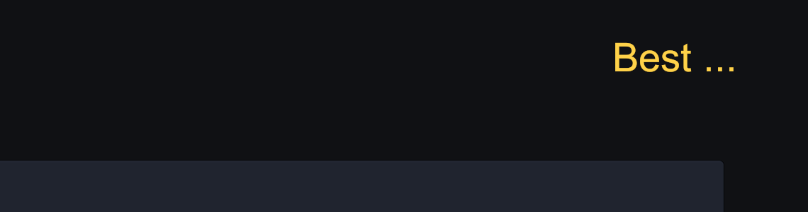
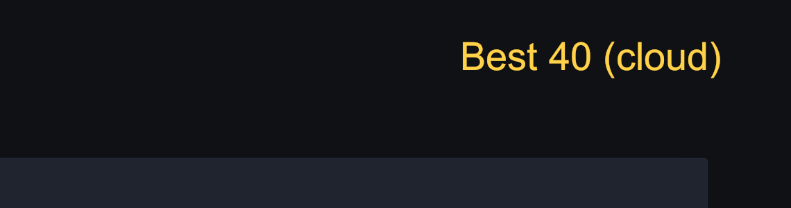
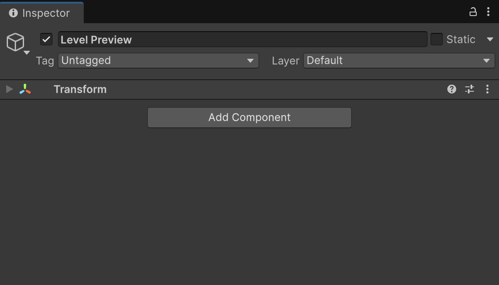
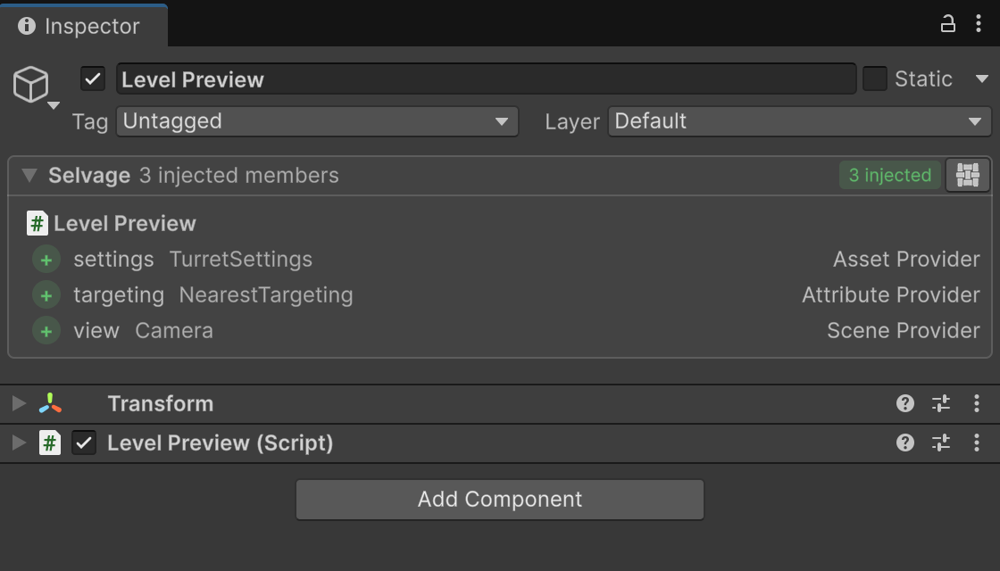

[Inject] class Turret : MonoBehaviour
{
[Inject] Rigidbody body;null
[SerializeField] [Inject] TurretSettings settings;null
[Inject] IScoreBoard scores;null
void Awake()
{
body = GetComponent<Rigidbody>();
scores = GameManager.Instance.Scores;
}
}
UnassignedReferenceExceptionThe variable settings of Turret has not been assigned.
Zenject
class GameInstaller : MonoInstaller
{
public override void InstallBindings()
{
Container.Bind<Rigidbody>().FromComponentSibling();
Container.Bind<TurretSettings>().FromResource("Turret");
}
}
VContainer
class GameScope : LifetimeScope
{
[SerializeField] Rigidbody turretBody;
[SerializeField] TurretSettings settings;
protected override void Configure(IContainerBuilder builder)
{
builder.RegisterComponentInHierarchy<Turret>();
builder.RegisterComponent(turretBody);
builder.RegisterInstance(settings);
}
}
IScoreBoard is not boundfound when it runs
An asset folder
Turret Settings
A class
[Provide] ScoreBoard
Nothing provides IScoreBoardcaught while editing
No attribute needed
Async loading
Edit mode injection
Cannon.cs×
Hud.cs×
LevelPreview.cs×
7
25[Inject(Async = true)] SaveData save;
4[ExecuteAlways, Inject(EditMode = true)]
And much more






2
With Zenject or VContainer
Selvage
Native dependency injection for Unity
Adapts to your project, not the other way around.